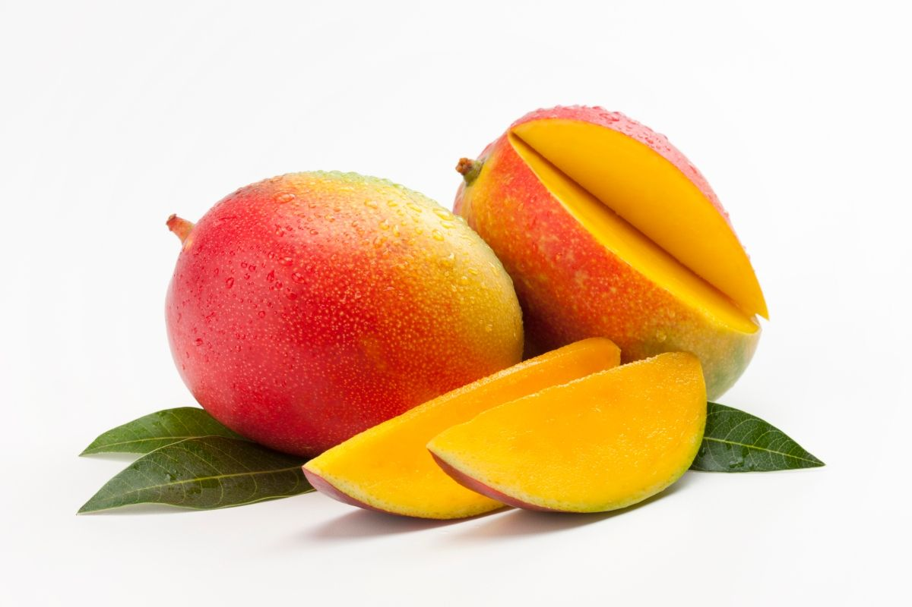
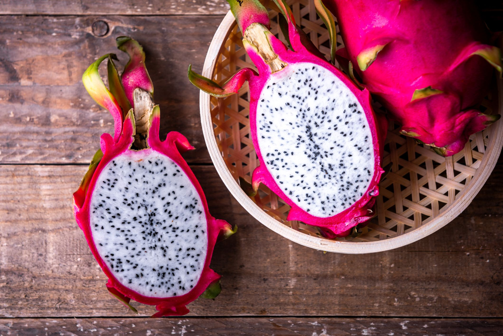
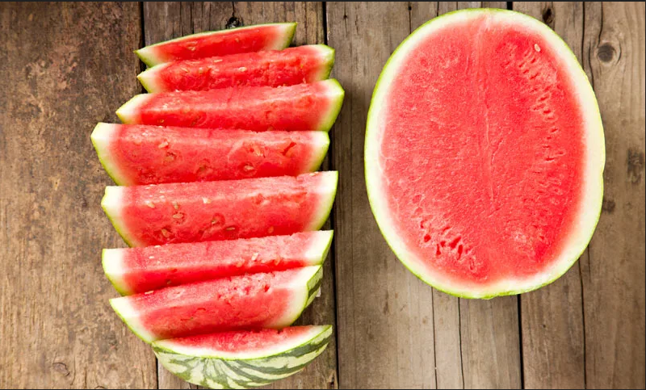

| PRODUCTO | DESCRIPCION | PRECIO | |
|---|---|---|---|

KIWI |
El kiwi, kivi o quivi es la baya de la enredadera Actinidia deliciosa. Es originaria de una gran área de China, sobre todo de los bosques del valle del río Yangtsé. Introducida en Nueva Zelanda en 1904, fue cultivada desde entonces en muchas regiones templadas por su fruto comestible. |
S/. 10.00 |
|
|

MANGO |
El mango es el nombre de las frutas de varias especies de árboles del género Mangifera, especialmente de Mangifera indica, y sus numerosos cultivares. |
S/. 9.50 |
|

PAPAYA |
Carica papaya es una planta herbácea del género Carica en la familia Caricaceae. Su fruto se conoce comúnmente como papaya, papayón, fruta bomba, olocotón, papayo, mamón, lechosa o lechoza. Carica del griego “karike”, nombre de una higuera. Papaya, deriva del maya “páapay-ya” que significa zapote jaspeado. |
S/. 5.00 |
|

PALTA |
Persea americana, llamado popularmente aguacate, palto, curo o aguacatero, es una especie arbórea del género Persea perteneciente a la familia Lauraceae, cuyo fruto, el aguacate o palta, es una baya comestible. |
S/. 10.00 |
|
|

PITAHAYA |
Pitahaya o fruta del dragón son nombres de los frutos de diversas especies del género Selenicereus de la familia Cactaceae, proveniente de América especialmente de Estados Unidos, México, Colombia |
S/. 25.00 |
|
|

SANDIA |
Citrullus lanatus, comúnmente llamada melón de agua, sandía, acendría, sindria, patilla, es una especie de la familia Cucurbitaceae. Es originaria de África con una gran presencia y difusión en todo el mundo. Se cultiva de manera extendida por todo el mundo debido a su fruto, el cual es un pepónide de enorme tamaño. |
S/. 12.00 |